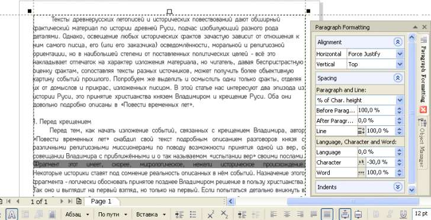

Редактирование текста, интервал между словами
Здравствуйте!
Есть страница с текстом, мне нужно выбрать одну строку и поменять в ней расстояние между словами.
1) На скриншоте приведён пример текста(нижний) с режимом "Без выравнивания по горизонтали" при котором текст с изменённым интервалом, и режимом "По ширине" при котором текст остаётся обычным хоть впиши туда 10000 % .
Когда в менюшке "Свойства текста" включен режим форматирования текста "Без выравнивания по горизонтали", то пункт "Интервал между словами" работает нормально, но когда я включаю нужный мне режим "По ширине", то я не могу менять "интервал между словами". Значение увеличивается, но текст не меняется. Зато "Интервал между символами" работает нормально в обоих режимах, что странно... Между знаками меняется расстояние, а между словами нет.
Т.е. мне нужно выровнять текст по ширине фрейма и я для этого включаю соответствующий режим "По ширине", но когда он работает я не могу изменить расстояние между словами.
2) Можно ли в corel draw x6 выделить конкретную строку во фрйме и применить к ней свои настройки? Т.к. если я начинаю разъединять весь фрейм по абзацам, а потом по строкам, чтобы выбрать нужную мне, то весь текст теряет свой вид и происходит непонятно что.
Заранее Спасибо!

Вы говорите, что при включённом выравнивании по ширине не изменяются междусловные интервалы.
А как Вы хотите? Когда Вы включаете выравнивание по ширине, строка растягивается на ширину текстовой рамки именно за счёт междусловных интервалов. Зачем же пытаться установить значение 1000 %, когда эти интервалы и так уже максимально растянуты. А вот за счёт уплотнения символов можно ещё увеличить междусловные интервалы, что и показано в моём примере.
Но, надо иметь в виду, что в текстовой рамке разные параметры форматирования применяются к разным абзацам. Поэтому, когда Вы хотите сделать это для одной лишь строки, то и отбивайте её клавишей "Перевод строки" (Enter), тогда она будет восприниматься как отдельный абзац.
Кстати, для выравнивания отдельной строки по ширине текстовой рамки применяют выравнивание не "по ширине", а "полное".
Solowejka,
Спасибо, Реально помогли!))) Просто нужно клацнуть Enter и настроить строку или абзац.